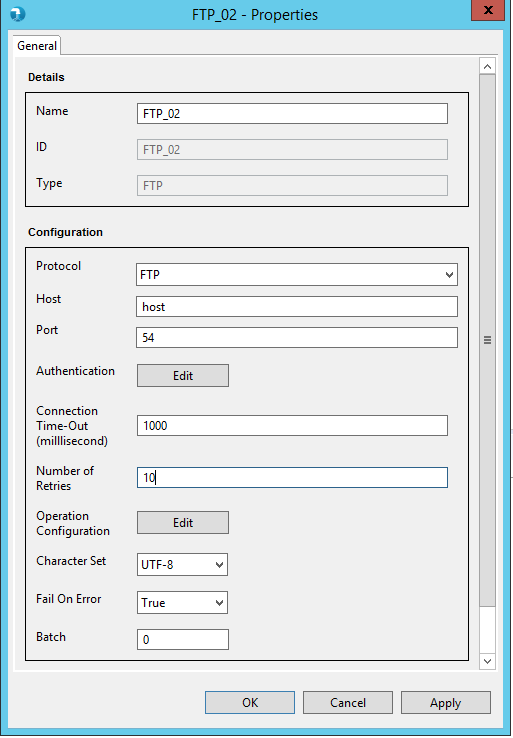
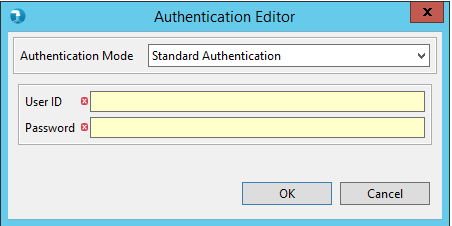
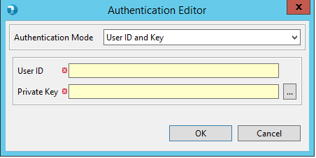
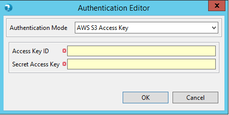
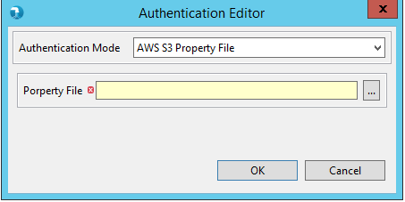
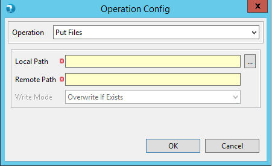
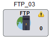
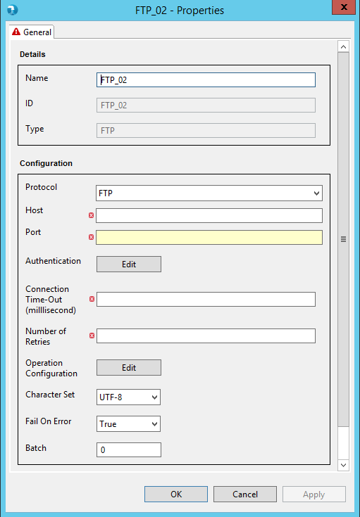
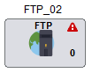

Properties can be viewed by double-clicking on component or selecting 'Properties' option from component
right-click option list. The properties contain a 'General' tab. Common and mandatory properties are present in the General tab.

- Name - The Name field will specify the name of the component as desired by the user.
- ID - ID field will specify unique id for every component.
- Type - Type further categorizes the component to detailed operation that it intends to perform. Here it is of type command FTP.
- Protocol - Provides drop-down to select the appropriate file transfer protocol from available list like FTP, SFTP, AWS S3 HTTPS.
- Host - Required to specify IP address or host name of server. Required property, if user opts for FTP or SFTP protocol.
- Port - Port simply accepts a numeric number starting from 0 to maximum 65535. Required property, if user opts for FTP or SFTP protocol.
- Authentication - User needs to provide connection details to establish the connection with appropriate server. Authentication editor displays different
modes of authentication based on protocol selection.
For FTP protocol, authentication editor provides 'Standard Authentication' mode, which contains textbox to accept User ID and Password.
For SFTP protocol, authentication editor provides two i.e. 'Standard Authentication' and 'User ID and Key' authentication mode.
In case of 'User ID and Key' authentication mode, user needs to specify the User ID and Private Key to create a connection.


For AWS S3 HTTPS protocol, authentication editor provides two i.e. 'AWS S3 Access Key' and 'AWS S3 Property File' authentication configuration mode.


- Connection Time-Out - It defines the connection time out in milliseconds.
- Number of Retries - It defines the number of tries to establish the connection.
- Operation Configuration - User can use Operation Config to provide the operation details.
- Operation - Provides options to select the required file transfer operation -
Get Files - Required to download the file from remote location to local path.
Put Files - Required to upload the file from local to remote path.
Write Mode - Write Mode provides two options i.e. 'Overwrite If Exists' and 'Fail If Exists'. User can select 'Overwrite If Exists' option to overwrite the file at the time of Get Files operation, if exists. On the other side, user can opt for 'Fail If Exists' option to fail the operation in case same file is already available at given local path.
User need to specify following values to Get or Put Files From/To AWS S3.
S3 Bucket - Specifies AWS S3 bucket name
S3 File Path - Specifies AWS S3 file path for operation
AWS Region - Specifies AWS S3 region


If user select protocol : AWS S3 HTTPS


- Character Set - Character Set provides drop-down to select encoding values from available list. Options are - UTF8, US-ASCII, ISO-8859-1 etc.
- Fail On Error - This property accepts Boolean values i.e. True and False. When 'True', component will fail the job in case any error occurs in FTP component operation. When set to 'False', control will be passed to immediate next component in case of success or failure in component operation.
- Batch - Batch simply accepts a numeric number starting from 0 to maximum 99 and signifies the batch this component will execute in. By default this is 0.
The FTP components applies validations to the mandatory fields. Upon placing the
FTP component on job canvas for the first time (from component palette), the component shows up a warning icon as
mandatory properties are not provided.

The properties window also displays error icon on mandatory fields if it has an incorrect value. The error icon
is displayed on the tab as well, if any of the field within the tab has some error.

If the properties window has some error even after user visit's it once, then the warning icon on the FTP
component on the job canvas changes to error icon. This error icon is removed only when all the mandatory fields are supplied
with correct values.
